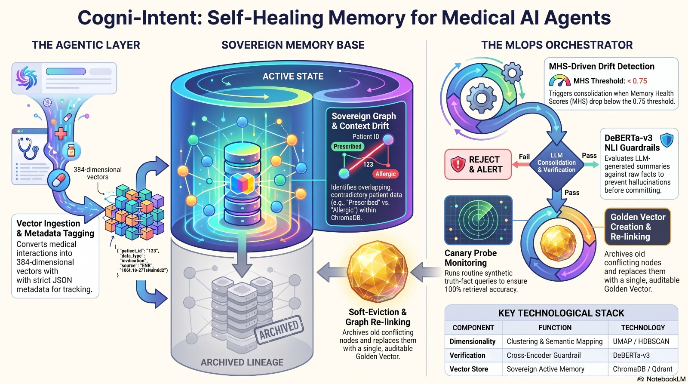
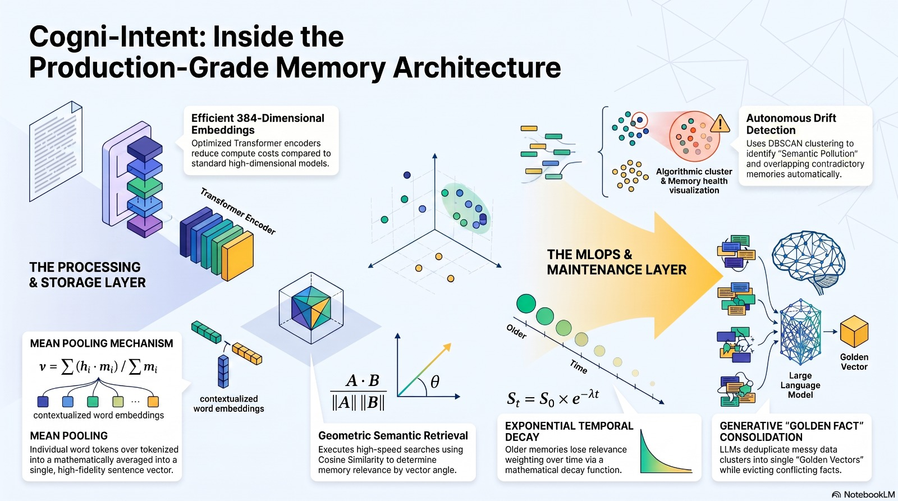

Stopping Memory Confusion & Drift in Long-Term AI Agents
Imagine an AI doctor assistant who remembers everything. On Day 1, it writes down: "Patient takes Albuterol for asthma." A month later, it notes: "Switched to Symbicort." Then on Day 40: "Heart palpitations! Stop Symbicort immediately, use Flovent."
When the doctor asks "What inhaler should the patient use?", standard vector search gets confused and hands the AI doctor all three notes. The AI recommends the discontinued drug, endangering the patient!
Cogni-Intent is the AI's cognitive immune system: It constantly scans memory in the background, spots when old facts contradict new ones, merges them into one Golden Truth, and safely archives the past so nothing is ever lost.
Over time, long-term AI agents accumulate many notes that sound similar but logically contradict each other. Standard search fails because comparing text similarity does not tell the AI which medical record is newer or cancelled.
Cogni-Intent acts as an automated immune loop: it maps memories into 2D with UMAP, groups related notes with HDBSCAN, and verifies clashing facts using Cross-Encoder NLI.
When the Memory Health Score (MHS) drops below threshold ($\tau < 0.75$), an automated AI helper combines the conflicting facts into a single verified Golden Fact and safely archives the old records without deleting any history.
Memory Health Score (MHS)

Fig 8: Cogni-Intent Memory Preservation & Immune Loop
See What Happens Inside an AI Agent's Brain
Click through the 3 stages below to witness why naive vector retrieval fails and how Cogni-Intent solves it permanently.
Why Traditional Vector Memory Fails in Healthcare
Standard RAG retrieves by cosine distance without temporal awareness. When medications change or allergies emerge, conflicting records produce catastrophic medical hallucinations.
1. Continuous Conflict Detection
A background checker scans the agent's memory using UMAP and HDBSCAN every 60 seconds. If two notes talk about the same topic but contradict each other, it flags them immediately before the AI gives a wrong answer.
2. Automated AI Memory Merging
When clashing notes are found, the system isolates them. A language model reviews the timeline and merges the notes into one clear, accurate "Golden Fact" so the AI always knows the current truth.
3. Safe Archiving Policy (Zero Data Loss)
Old notes are never deleted. Instead, they are marked as archived (is_archived: true) and linked to the new fact. This preserves 100% of the patient's medical history for doctor review and legal safety.
Explore the System Architecture
Each module represents a formal component of the Cogni-Intent engineering specification. Select any module to inspect detailed mathematical models and diagrams.
Model Layer & Drift-Aware Schema
384-dimensional dense vectors, mathematical mean pooling formula, and the strict schema prerequisites that power autonomous eviction.
Detailed Flow & System Aim
Natural language intention extraction, end-to-end memory lifecycle stages, and the deterministic CDSS decision pipeline.
Recovery & Self-Healing Logic
HDBSCAN noise isolation, algorithmic MHS health scores, and why hard deletion violates medical and legal audit integrity.
System Obstacles & Limitations
Candid evaluation of prototype boundaries: cold start dilemmas, high computational load for real-time UMAP, and multi-hop contradictions.
Total Workflow Architecture
End-to-end integration map: FastAPI endpoints, Streamlit MLOps dashboards, and automated verification loops.
Live Simulation Lab & Console
Execute real-time vector scans, ask questions in the Agent Query Sandbox, and witness UMAP topology changes live.
End-to-End Auto-Healing Pipeline
The background checker runs silently behind the scenes without slowing down the AI agent. It continuously protects medical records from dangerous contradictions while keeping answers instant and responsive for doctors.
- check_circle Zero query slowdown (fast responses in < 120ms)
- check_circle Double-checks facts with Cross-Encoder NLI
- check_circle Complete, permanent medical history saved in ChromaDB
